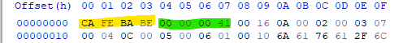

6.2 플랫폼 독립을 향한 초석
jvm 이 제공하는것
- 플랫폼 독립성 :
- 언어 독립성 : 핵심은 가상머신과 바이트 코드 저장 형식임
- 바이트 코드 (.class) : 튜링 완전하기 때문에 자바 가상 머신에서 어떠한 언어도 표현할 수 있도록 보장
- 자바 가상 머신은 class 파일에만 의존 하기에 어떤 프로그래밍 언어 컴파일러로 파일이 생성되었든 상관하지 않는다.
튜링 완전(turing completeness)이란 어떤 프로그래밍 언어나 추상 기계가 튜링 기계와 동일한 계산 능력을 가진다는 의미이다. 이것은 튜링 기계로 풀 수 있는 문제, 즉 계산적인 문제를 그 프로그래밍 언어나 추상 기계로 풀 수 있다는 의미이다.
6.3 클래스 파일의 구조
클래스 파일: 바이트로를 단위로 하는 이진 스트림 집합체이다.
- 클래스 파일은 데이터를 저장하는데 c 언어와 비슷한 의사구조를 사용하는데 아래 두 데이터 타입만 사용한다
- 부호 없는 숫자
- 테이블 : “_info” 로 끝나는 변수 , 부호없는 숫자나 또다른 테이블로 구성되는 복합 데이터 타입
- _count 항목 : 같은 타입의 데이터 여러개를 표현할 때 그 개수가 정해져 있지 않다면 그 개수를 알려주는 타입이다. 이 형태의 타입을 “컬렉션” 이라한다
클래스 파일 구성 요소

-
매직 넘버 : 가상 머신이 허용하는 클래스 파일인지 확인하는 여부 , 0XCAFEBABE
-
클래스 파일의 버전 번호 : 파일 형식이 변경되지 않았더라도 상위 버전의 클래스 파일을 실행할 수 없음
-
상수 풀 : 클래스 파일의 자원 창고로 클래스 파일 내의 상수의 수를 나타낸다.
- 리터럴 : final 과 같은 상수
- 심벌 참조 : 컴파일과 관련된 기능, 자바에서 링크는 가상 머신이 클래스 파일을 로드할 때 동적으로 이루어 지기 떄문에 JVM 이 심벌 참조를 런타임에 변환 해야지만 각 항목의 실제 메모리 주소를 알 수 있다. 그래서 가상 머신은 상수풀에 존재하는 심벌 참조를 가져와 동적으로 클래스 파일을 로드한다.
-
Access flags : 현재 클래스 파일이 클래스, 인터페이스 여부 , 접근 제한자 판정
-
클래스 인덱스, 부모 클래스 인덱스, 인터페이스 인덱스 : 현재 클래스 파일의 상속 관계
-
필드 테이블 : 인터페이스 , 클래스 안에 선언된 변수들 설명 ( 상속 받은 필드 포함하지 않음)
- access_flags
- descriptor_index
-
메서드 테이블 : 필드테이블과 유사, 메서드의 본문은 속성 테이블의 “code에”저장된다.
-
속성 테이블
- code
메서드 본문이 바이트 코드 명령어로 변환된 후 여기에 저장된다. - max_stack : 피연산자 스택의 최대 깊이
- max_locals : 가상 머신이 지역 변수용으로 메모리를 할당하는 가장 작은 단위
- code_length : 메서드 본문의 최대 길이인데 2^16 크기로 제한을 넘기 힘듬
피연산자 스택 , 지역 변수 테이블은 메모리 스택영역의 사용량에 직접적으로 영향을 준다.
- code
모든 인스턴스 메서드에 this 를 포함 하기 때문에 매개 변수가 없는 함수또한 locals 값이 1 이다 . staic 함수를 제외한 인스턴스 메서드들의 locals 최소 값은 1이다.
- StackMapTable : Code 속성에 포함되며 타입 검증기로 사용된다. 기존에 데이터의 흐름을 분석하여 타입을 추론 하는 방식의 클래스 로딩 성능 저하 문제를 해결했다.
컴파일 시점에서 클래스 파일에 검증 타입을 기록해두고 런타임에 이 타입을 확인한다.
6.4 바이트코드 명령어 소개
JVM 명령어는 특정 작업을 뜻하는 바이트 길이의 숫자인 연산 코드와 해당 작업에 필요한 0개 이상의 피연산자로 이루어진다.
- 연산코드는 1바이트 크기이다. 따라서 1바이트가 넘는 데이터를 처리할 때는 런타임에 해당 바이트들을 재구성 해야한다.
- 연산코드가 바이트 하나의 크기이기 때문에 패딩을 없애 컴파일된 결과물이 짧고 간결하다는 장점이 있다.
바이트 코드 명령어는 아래의 범주로 나눌수 있다.
- 로드와 스토어 명령어
스택 프레임의 지역 변수 테이블과 피연산자 스텍 사이에서 데이터를 주고 받는데 쓰인다. - 산술 명령어
피연산자 스택의 값 두개를 이용해 특정 산술 연산을 수행하고, 결과 값을 피연산자 스택 맨위에 삽입 - 형변환 명령어
숫자 데이터를 다른 숫자 타입으로 변환한다. - 객체 생성과 접근 명령어
클래스 인스턴스, 배열 객체에 다른 명령어가 사용된다. - 피연산자 스택 관리 명령어
스택을 직접 조작하는 명령어 - 제어 전이 명령어
프로그램의 실행 흐름을 조건, 무조건적으로 지정한 위치의 명령어로 이동시킴 ( jump ) - 메서드 호출과 반환 명령어
- 예외처리 명령어
- 동기화 명령어